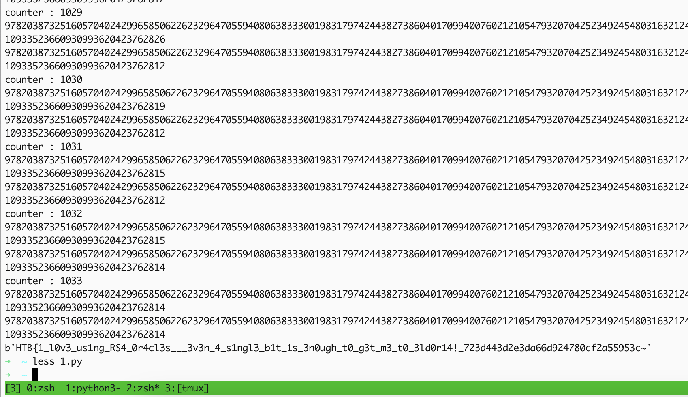

Twin Oracle
Twin Oracle
| Category |
Difficulty |
Score |
| Crypto |
Hard |
1000 |
Code / Description
| A powerful artifact—meant to generate chaos yet uphold order—has
revealed its flaw. A misplaced rune, an unintended pattern, an
oversight in the design. The one who understands the rhythm of its
magic may predict its every move and use it against its creators. Will
you be the one to claim its secrets?
|
| from Crypto.Util.number import *
FLAG = bytes_to_long(open('flag.txt', 'rb').read())
MENU = '''
The Seers await your command:
1. Request Knowledge from the Elders
2. Consult the Seers of the Obsidian Tower
3. Depart from the Sanctum
'''
class ChaosRelic:
def __init__(self):
self.p = getPrime(8)
self.q = getPrime(8)
self.M = self.p * self.q
self.x0 = getPrime(15)
self.x = self.x0
print(f"The Ancient Chaos Relic fuels the Seers' wisdom. Behold its power: M = {self.M}")
def next_state(self):
self.x = pow(self.x, 2, self.M)
def get_bit(self):
self.next_state()
return self.extract_bit_from_state()
def extract_bit_from_state(self):
return self.x % 2
class ObsidianSeers:
def __init__(self, relic):
self.relic = relic
self.p = getPrime(512)
self.q = getPrime(512)
self.n = self.p * self.q
self.e = 65537
self.phi = (self.p - 1) * (self.q - 1)
self.d = pow(self.e, -1, self.phi)
def sacred_encryption(self, m):
return pow(m, self.e, self.n)
def sacred_decryption(self, c):
return pow(c, self.d, self.n)
def HighSeerVision(self, c):
return int(self.sacred_decryption(c) > self.n//2)
def FateSeerWhisper(self, c):
return self.sacred_decryption(c) % 2
def divine_prophecy(self, a_bit, c):
return self.FateSeerWhisper(c) if a_bit == 0 else self.HighSeerVision(c)
def consult_seers(self, c):
next_bit = self.relic.get_bit()
response = self.divine_prophecy(next_bit, c)
return response
def main():
print("You stand before the Seers of the Obsidian Tower. They alone hold the knowledge you seek.")
print("But be warned—no force in Eldoria can break their will, and their wisdom is safeguarded by the power of the Chaos Relic.")
my_relic = ChaosRelic()
my_seers = ObsidianSeers(my_relic)
counter = 0
while counter <= 1500:
print(MENU)
option = input('> ')
if option == '1':
print(f"The Elders grant you insight: n = {my_seers.n}")
print(f"The ancient script has been sealed: {my_seers.sacred_encryption(FLAG)}")
elif option == '2':
ciphertext = int(input("Submit your encrypted scripture for the Seers' judgement: "), 16)
print(f'The Seers whisper their answer: {my_seers.consult_seers(ciphertext)}')
elif option == '3':
print("The doors of the Sanctum close behind you. The Seers watch in silence as you depart.")
break
else:
print("The Seers do not acknowledge your request.")
continue
counter += 1
print("The stars fade, and the Seers retreat into silence. They shall speak no more tonight.")
if __name__ == '__main__':
main()
|
Overview
This challenge consists of several challenges
- Break a weakly implemented pseudorandom number generator (PRNG) to recover its seed
- Attack two different RSA oracles using side-channel attacks with two different strategies
- combine the two attacks to overcome the limit on the number of requests
Challenge Analysis
First of all, let's analyze what the source code is doing.
It has two classes, ChaosRelic and ObsidianSeers.
| class ChaosRelic:
def __init__(self):
self.p = getPrime(8)
self.q = getPrime(8)
self.M = self.p * self.q
self.x0 = getPrime(15)
self.x = self.x0
print(f"The Ancient Chaos Relic fuels the Seers' wisdom. Behold its power: M = {self.M}")
def next_state(self):
self.x = pow(self.x, 2, self.M)
def get_bit(self):
self.next_state()
return self.extract_bit_from_state()
def extract_bit_from_state(self):
return self.x % 2
|
This class looks like a random number generator that starts with an initial state \(x_0\), and every time the state changes like this
$x \equiv x^2 \mod M$
$M = p*q$
M is a 16-bit composite number which is the multiplication of two 8-bit primes p,q. Because M is in the form of \(p*q\), the x will not generate the entire group, and it will randomly generate some specific elements from the group and will cycle through them. This is quite similar to a random number generator. The M is public and is printed in the server banner below. But the x0 (the initial state) is unknown
| You stand before the Seers of the Obsidian Tower. They alone hold the knowledge you seek.
But be warned—no force in Eldoria can break their will, and their wisdom is safeguarded by the power of the Chaos Relic.
The Ancient Chaos Relic fuels the Seers' wisdom. Behold its power: M = 47897
|
| class ObsidianSeers:
def __init__(self, relic):
self.relic = relic
self.p = getPrime(512)
self.q = getPrime(512)
self.n = self.p * self.q
self.e = 65537
self.phi = (self.p - 1) * (self.q - 1)
self.d = pow(self.e, -1, self.phi)
def sacred_encryption(self, m):
return pow(m, self.e, self.n)
def sacred_decryption(self, c):
return pow(c, self.d, self.n)
def HighSeerVision(self, c):
return int(self.sacred_decryption(c) > self.n//2)
def FateSeerWhisper(self, c):
return self.sacred_decryption(c) % 2
def divine_prophecy(self, a_bit, c):
return self.FateSeerWhisper(c) if a_bit == 0 else self.HighSeerVision(c)
def consult_seers(self, c):
next_bit = self.relic.get_bit()
response = self.divine_prophecy(next_bit, c)
return response
|
ُThis class consists of implementing a 1024-bit RSA algorithm with a bunch of functions doing random stuff, which will be explored further.
The main section of the code offers us three choices:
| The Seers await your command:
1. Request Knowledge from the Elders
2. Consult the Seers of the Obsidian Tower
3. Depart from the Sanctum
|
- The third option is nothing but to quit the program
| else:
print("The Seers do not acknowledge your request.")
continue
|
- By choosing the first one, the server will encrypt the flag and provide us with the public RSA modulus and the encrypted flag.
| if option == '1':
print(f"The Elders grant you insight: n = {my_seers.n}")
print(f"The ancient script has been sealed: {my_seers.sacred_encryption(FLAG)}")
|
| The Seers await your command:
1. Request Knowledge from the Elders
2. Consult the Seers of the Obsidian Tower
3. Depart from the Sanctum
> 1
The Elders grant you insight: n = 84223988112329788643315126478856298001964465223902564550457158504322548445551982946374719278491504704656043776095798840695185826964713620325457868836976247617788774865906426812535522263573890128765265912164329380552122731810918647455745367204862041691840856883985327365103112116603011698927744483206062728177
The ancient script has been sealed: 47694792918067833618743337085074169616387122847854183880922228123790116865360288170088204064193033596887527465969348968814544104147445017166395413765181640814259263450597744776172288013953900133905995520194649135666797777071440078060478319519681570941988003198237202426022625737178644671710688961046463818717
|
- By choosing the second option, the server expects an encrypted text in hex format from us and will call the
consult_seers function with our input.
| elif option == '2':
ciphertext = int(input("Submit your encrypted scripture for the Seers' judgement: "), 16)
print(f'The Seers whisper their answer: {my_seers.consult_seers(ciphertext)}')
|
Let's see what happens inside the function.
| def consult_seers(self, c):
next_bit = self.relic.get_bit()
response = self.divine_prophecy(next_bit, c)
return response
|
This function is called the get_bit function of the relic instance, which is an instance of the ChaosRelic class that was explored before. Here is the get_bit function
| def get_bit(self):
self.next_state()
return self.extract_bit_from_state()
|
It will simply call the next_state function, which will generate a new state from the previous state
| def next_state(self):
self.x = pow(self.x, 2, self.M)
|
Back to the get_bit function, this function calls another function named extract_bit_from_state, which will return the LSB(Least Significant bit) of the state simply by taking the state to modulus 2
| def get_bit(self):
self.next_state()
return self.extract_bit_from_state()
def extract_bit_from_state(self):
return self.x % 2
|
Let's return to the first function, consult_seers. Overall, the first line will generate a new state and return whether it is even or odd.
| def consult_seers(self, c):
next_bit = self.relic.get_bit()
response = self.divine_prophecy(next_bit, c)
return response
|
The next line will be called divine_prophecy with next_bit and the encrypted text c, which we have given to the server. Let's see what is happening inside the function
| def HighSeerVision(self, c):
return int(self.sacred_decryption(c) > self.n//2)
def FateSeerWhisper(self, c):
return self.sacred_decryption(c) % 2
def divine_prophecy(self, a_bit, c):
return self.FateSeerWhisper(c) if a_bit == 0 else self.HighSeerVision(c)
|
The following line will be called divine_prophecy with next_bit and the encrypted text c, which we have given to the server. Let's see what is happening inside the function
The FateSeerWhisper will tell us whether the decryption of our provided cipher c is even or odd by taking to modulus 2. On the other hand, the FateSeerWhisper function will tell us whether the decryption of cipher message c is larger than half of the public modulus n or not.
In a big picture, we can illustrate the overall process using this code:
| c = input('hex format : ')
if next_state() % 2 == 0: # if state is even
return decrypt(c) % 2
# returns 1 if decryption result ends in bit 1
# else returns 0
else: # if state is odd
return int(decrypt(c)) > (n//2)
# returns 1 if result of decryption is greater than n/2
# else returns 0
|
As an example
| You stand before the Seers of the Obsidian Tower. They alone hold the knowledge you seek.
But be warned—no force in Eldoria can break their will, and their wisdom is safeguarded by the power of the Chaos Relic.
The Ancient Chaos Relic fuels the Seers' wisdom. Behold its power: M = 57121
The Seers await your command:
1. Request Knowledge from the Elders
2. Consult the Seers of the Obsidian Tower
3. Depart from the Sanctum
> 2
Submit your encrypted scripture for the Seers' judgement: 1000
The Seers whisper their answer: 1
|
Solution
We can start explaining the solution now that we've realized what the code is doing. We are obviously facing an RSA oracle that expects ciphertext from the user and returns just a single bit (0 or 1). When the state is 0, the oracle returns the least significant bit of the decrypted text. There is already a known attack to recover an encrypted ciphertext from an RSA oracle that has such behaviors named Least Significant Bit Oracle Attack. There are already a lot of explanations about it around the internet, but I used this GitHub link and also this StackExchange link which has demonstrated it with example and also the python code.
| e = 65537
upper_limit = N
lower_limit = 0
flag = ""
i = 1
# for 1024 bit N
while i <= 1024:
chosen_ct = long_to_bytes((bytes_to_long(flag_enc)*pow(2**i, e, N)) % N)
output = _decrypt(chosen_ct)
if ord(output[-1]) == 0:
upper_limit = (upper_limit + lower_limit)/2
elif ord(output[-1]) == 1:
lower_limit = (lower_limit + upper_limit)/2
else:
throw Exception
i += 1
# Decrypted ciphertext
print long_to_bytes(upper_limit)
|
If you want a detailed explanation of how this attack works, read through those links, but let's describe the overall algorithm.
RSA has a fantastic property named Homomorphism. it means
$f(x.y) = f(x).f(y)$
Regarding RSA, imagine we have two messages: \(m_1\) and \(m_2\). By definition, we can write:
$E(m1*m2) = E(m1).E(m2)$
Consider \(c\) as the encryption of \(m=m1*m2\) and \(c_i\) as encryption of \(m_i\) for \(i={1,2}\). We can write
$c_1 \equiv (m_1)^e \mod n$
$c_2 \equiv (m_2)^e \mod n$
$c \equiv (m_1*m_2)^e = (m)^e \mod n$
$c \equiv c1 * c2 \mod n$
Consider we want to decrypt the encrypted flag, which has been encrypted.
$cf \equiv flag^e \mod N$
Let's analyze this approach.
Encrypt 2 by the public key n,e, which is known, and multiply the result by cf modulus N and name the result ct
$ct \equiv cf * 2^e \mod N$
By Homomorphism, we know that once the ct is decrypted, it will result in \(2*flag\). We know that n is odd, and if \(2*flag\) is less than n, it will result in \(2*flag\), which is definitely even and will return 0, but if \(2*flag\) is greater than n, it will result in \(2*flag - N\) which is odd (even - odd = odd). The result will be
so we send \(2M\) to the server:
- if the result is 0, then \(M < N/2\)
- if the result is 1, then \(M > N/2\)
Like \(2M\), let's see how the server reacts for \(4M\)
we send \(2M\) then \(4M\) and based upon server behaviour
- if the result is 0,0 then \(M < N/2\) and \(M < N/4\)
- if the result is 0,1 then \(M < N/2\) and \(M > N/4\)
- if the result is 1,0 then \(M > N/2\) and \(M < 3N/4\)
- if the result is 1,1 then \(M > N/2\) and \(M > 3N/4\)
If we continue to raise the coefficients like \(2M, 4M, 8M, 16M, ...\), we can limit the boundaries for M until we reach a specific value for M, which is actually the decrypted plaintext. It looks like some form of binary search to find M, and it will done in \(O(\log{n})\).
I recommend reading the StackExchange link, which has more details to explain.
Now we know we have an Oracle that is vulnerable to an LSB Oracle attack. But there is a problem. Getting back to the code, we have two different oracles. The other one has different behaviors, and our input flows through each of them based on the state, which is random and unknown. Therefore, to overcome this problem, we must first get the initial value of our random number generator. Due to its small size (16-bit), we can ensure that the cycling group generated by the state is not that large.
To find out the initial state, we need to give a carefully crafted input that will be directed to the second oracle, which checks whether the decryption result is greater than \(n/2\). Let's say we send this encrypted text to the server
$cf \equiv (N-1)^e \mod N$
After sending this input to the server, let's see what will happen in different states
$cf^d \equiv N-1 \mod N$
| c = input('hex format : ')
if next_state() % 2 == 0: # if state is even
return decrypt(c) % 2
# returns 1 if decryption result ends in bit 1
# else returns 0
else: # if state is odd
return int(decrypt(c)) > (n//2)
# returns 1 if result of decryption is greater than n/2
# else returns 0
|
- if next_state() is even or (state % 2) is
0: we know that N-1 is even so it will return 0
- if next_state() is odd or (state % 2) is
1: we know that N-1 is greater than \(n/2\) so it will return 1
It is clear that this special input will return 0 if the state is even and 1 if the state ID is odd.
So we can get enough sequences of \({0,1}\) from the server by this special input and determine the initial state. To do so, we will generate all possible states of every prime number between \(2^14\) and \(2^15\) (all 15-bit prime numbers) and check the received pattern from the oracle to match which number includes the same pattern. We will determine the initial state, which acts as the seed of our random number generator, and will finally break the weakly implemented PRNG
Here is the implemented code to recover the server's initial state:
| def gen_patterns(M):
patterns = {}
for i in range(2**14, 2**15):
if isPrime(i):
x = i
patterns[i] = []
gens = [x]
counter = 0
while counter < 1000:
x = pow(x, 2, M)
if not (x in gens):
counter = 0
gens.append(x)
counter += 1
for g in gens:
patterns[i].append(g % 2)
return patterns
def get_state(sock, patterns, n, c):
global counter
index = 0
copy = patterns.copy()
while len(patterns) != 1 and counter < 30:
counter += 1
ct = 0
ct = pow(n-1, 0x10001, n)
sock.sendall(b'2\n')
recvall(sock, 4096)
sock.sendall(f'{hex(ct)[2:]}\n'.encode())
data = recvall(sock, 4096).decode()
index += 1
parity = int(re.findall(r'The Seers whisper their answer: ([0-1])', data)[0])
for p in copy:
if p in patterns and copy[p][index % len(copy[p])] != parity:
patterns.pop(p)
print(patterns.keys())
return (patterns, index)
patterns = gen_patterns(M)
states,index = get_state(sock, patterns, n, c)
print(states)
print(index)
|
Now that we have the initial state, we can predict the next state and determine which oracle our input will flow to send our crafted input for the LSB oracle attack if the state is even. Otherwise, we will send an empty input to avoid the second oracle. But there is another problem. We need approximately 1024 requests to make the attack (because it performs in \(Log_n\) and the \(n\) is 1024 bit), but there is a counter that limits the total number of requests to 1500
Based on the state value, around half of our requests will go to the desired oracle, which results in sending about 750 requests. The remaining requests will not be accepted by the server anymore. Therefore, the decryption process will remain unfinished, and we have to start from the beginning.
To overcome this challenge, based on the challenge name (twin oracle), we should utilize both oracles to limit our boundaries of n to recover m, which is the flag. After searching for a noticeable amount of time, I came up with exploiting the second oracle's behavior to decrypt the flag. Although I could not find a direct reference to explain this attack, we can observe and illustrate it as an example.
According to the code
| return int(decrypt(c)) > (n//2)
|
if we send and encrypted text \(C\)
$C \equiv M^e \mod N$
it will return 0 if the decrypted message is lower than \(n/2\); otherwise it will return 1. In another word,
$M > N/2$
$2*M > N$
We can use a similar approach to LSB oracle attack and start to multiply the M, which we want to decrypt by exponents of 2 and send it to the server to limit the bondaries of N which shows what ranges of N, M might be at.
As an example:
- Let's say we send \(C \equiv (M)^e \mod N\).
- if server returns 0 is means \(M<N/2\) otherwise \(M > N/2\).
- Let's say we send \(C \equiv (2*M)^e \mod N\).
- if the server returns 0 it means \(M<N/4\) otherwise \(M>N/4\)
Now consider we send a message like:
$C_i \equiv (2^i*M)^e \mod N$
- if the answer is
0, it means
- \(M < N/{2^{i+1}}\) and we should lower the upper bound to \({L+H}/2\)
- if the answer is
1, it means
- \(M > N/{2^{i+1}}\) and we should rise the lower bound to \({L+H}/2\)
This also looks like a binary search to limit the boundaries until we reach the exact value for M.
$H-L < 1$
The code to illustrate this attack is similar to the previous one, with a slight difference: the index of i should start from 0 instead of 1 because the server already has a 2 coefficient.
| e = 65537
upper_limit = N
lower_limit = 0
flag = ""
i = 0
# for 1024 bit N
while i <= 1024:
chosen_ct = long_to_bytes((bytes_to_long(flag_enc)*pow(2**i, e, N)) % N)
output = _decrypt(chosen_ct)
if ord(output[-1]) == 0:
upper_limit = (upper_limit + lower_limit)/2
elif ord(output[-1]) == 1:
lower_limit = (lower_limit + upper_limit)/2
else:
throw Exception
i += 1
# Decrypted ciphertext
print long_to_bytes(upper_limit)
|
Since we have to use both Oracles simultaneously without exceeding the limit(1500 requests), we should somehow combine these two algorithms. The algorithms are exactly the same except for the starting index. However, for the operation on upper and lower bounds, I was not sure how to combine these two algorithms. Should I choose two different sets of bounds, or was one enough? After choosing one pair, it worked.
So here is the code to attack the oracles
| def oracle_attack(N, e, C, oracle, index, M):
low = 0
high = N
x = list(patterns.keys())[0]
print(x)
for i in range(index):
x = pow(x, 2, M)
i = 1
j = 0
while abs(high-low):
print(f'counter : {counter}')
x = pow(x, 2, M)
if x % 2 == 0:
po = pow(2, e*i, n)
ct = (po * C) % n
parity = oracle(sock, ct)
if parity == 0:
high = (low+high) // 2
else:
low = (low+high+1) // 2
i += 1
j += 1
else:
po = pow(2, e*j, n)
ct = (po * C) % n
parity = oracle(sock, ct)
if parity == 0:
high = (low+high) // 2
else:
low = (low+high+1) // 2
i += 1
j += 1
print(high)
print(low)
return low
|
Notice that we should get the current state before attacking the oracles by repeating the random number generator operation.
| x = list(patterns.keys())[0]
print(x)
for i in range(index):
x = pow(x, 2, M)
|
Final Code
The final code to automate the process:
| import socket
from time import sleep
import re
from Crypto.Util.number import *
# host = '83.136.254.73'
# port = 57362
host = '127.0.0.1'
port = 50001
sock = socket.socket(socket.AF_INET, socket.SOCK_STREAM)
sock.connect((host, port))
counter = 0
def recvall(sock, buffer_size=4096, end_marker=None, timeout=0.1):
data = b""
sock.settimeout(timeout)
try:
while True:
chunk = sock.recv(buffer_size)
if not chunk:
break
data += chunk
if end_marker and end_marker in data:
data = data.split(end_marker)[0]
break
except socket.timeout:
pass
return data
def gen_patterns(M):
patterns = {}
for i in range(2**14, 2**15):
if isPrime(i):
x = i
patterns[i] = []
gens = [x]
counter = 0
while counter < 1000:
x = pow(x, 2, M)
if not (x in gens):
counter = 0
gens.append(x)
counter += 1
for g in gens:
patterns[i].append(g % 2)
return patterns
def get_state(sock, patterns, n, c):
global counter
index = 0
# reverse_dict = {tuple(v): k for k, v in patterns.items()}
copy = patterns.copy()
while len(patterns) != 1 and counter < 30:
counter += 1
ct = 0
ct = pow((n//100)*80, 0x10001, n)
sock.sendall(b'2\n')
recvall(sock, 4096)
sock.sendall(f'{hex(ct)[2:]}\n'.encode())
data = recvall(sock, 4096).decode()
# print(data)
index += 1
parity = int(re.findall(r'The Seers whisper their answer: ([0-1])', data)[0])
print(parity)
# parity = test_oracle()
for p in copy:
if p in patterns and copy[p][index % len(copy[p])] != parity:
patterns.pop(p)
print(len(patterns))
print(patterns.keys())
return (patterns, index)
def oracle(sock, ct):
global counter
counter += 1
sock.sendall(b'2\n')
recvall(sock, 4096)
sock.sendall(f'{hex(ct)[2:]}\n'.encode())
data = recvall(sock, 4096).decode()
# print(data)
answer = int(re.findall(r'The Seers whisper their answer: ([0-9])', data)[0])
return answer
def oracle_attack(N, e, C, oracle, index, M):
low = 0
high = N
x = list(patterns.keys())[0]
print(x)
for i in range(index):
x = pow(x, 2, M)
i = 1
j = 0
while abs(high-low):
print(f'counter : {counter}')
x = pow(x, 2, M)
if x % 2 == 0:
po = pow(2, e*i, n)
ct = (po * C) % n
parity = oracle(sock, ct)
if parity == 0:
high = (low+high) // 2
else:
low = (low+high+1) // 2
i += 1
j += 1
# pass
else:
po = pow(2, e*j, n)
ct = (po * C) % n
parity = oracle(sock, ct)
if parity == 0:
high = (low+high) // 2
else:
low = (low+high+1) // 2
i += 1
j += 1
# pass
print(high)
print(low)
return low
data = recvall(sock, 4096)
print(data.decode())
M = int(re.findall(r'M = ([0-9]+)', data.decode())[0])
sock.sendall(b'1\n')
data = recvall(sock, 4096)
print(data.decode())
n = int(re.findall(r'n = ([0-9]+)', data.decode())[0])
c = int(re.findall(r'The ancient script has been sealed: ([0-9]+)', data.decode())[0])
patterns = gen_patterns(M)
states,index = get_state(sock, patterns, n, c)
print(states)
print(index)
m = oracle_attack(n, 0x10001, c, oracle, index, M)
flag = long_to_bytes(m)
print(flag)
|
And here is the process and extracted flag(the last byte could get fixed by just subtracting 1 from the final M)

Flag
| HTB{1_l0v3_us1ng_RS4_0r4cl3s___3v3n_4_s1ngl3_b1t_1s_3n0ugh_t0_g3t_m3_t0_3ld0r14!_723d443d2e3da66d924780cf2a55953c}
|
Authors
Kourosh Rajabzadeh
{kind=link}